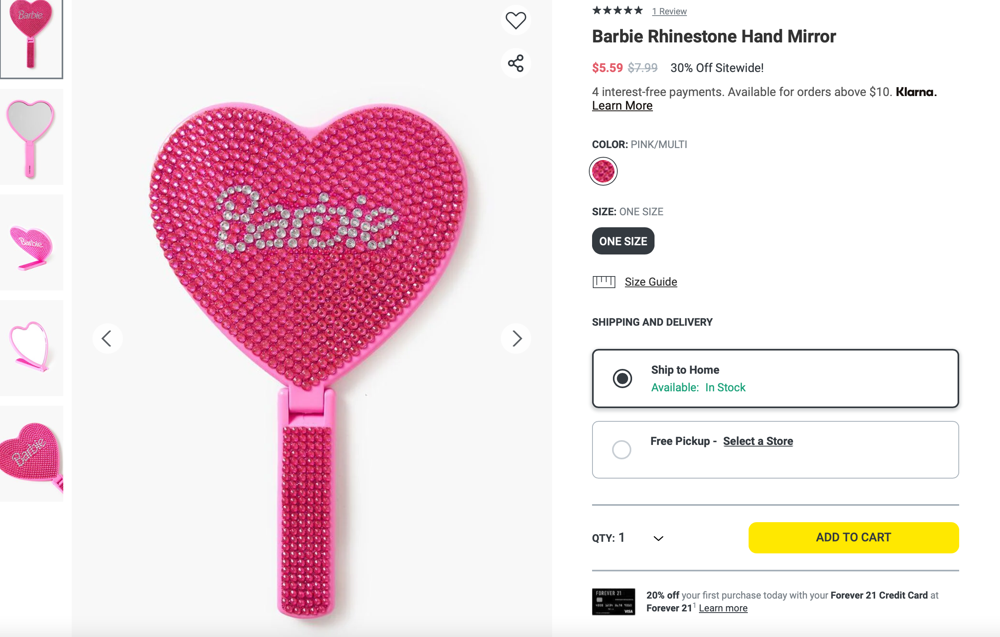
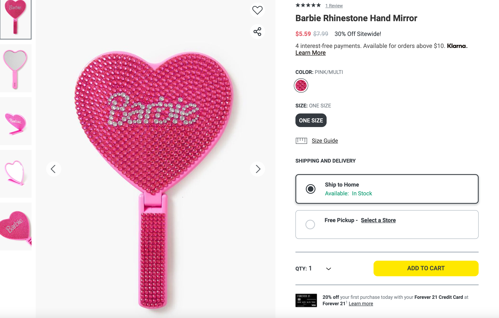
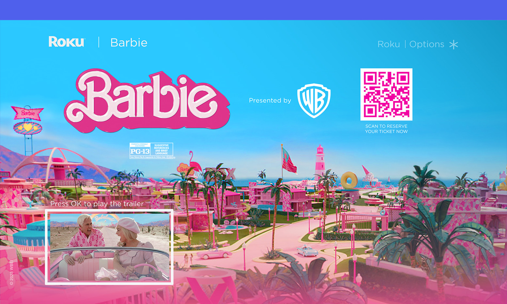
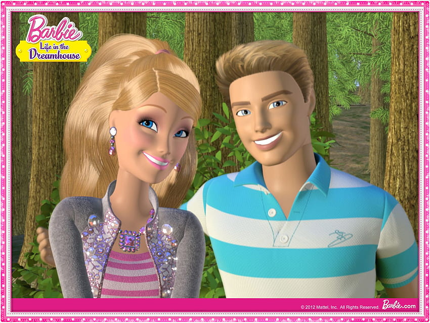
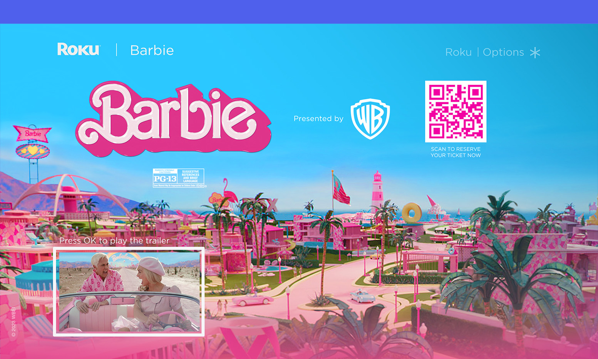
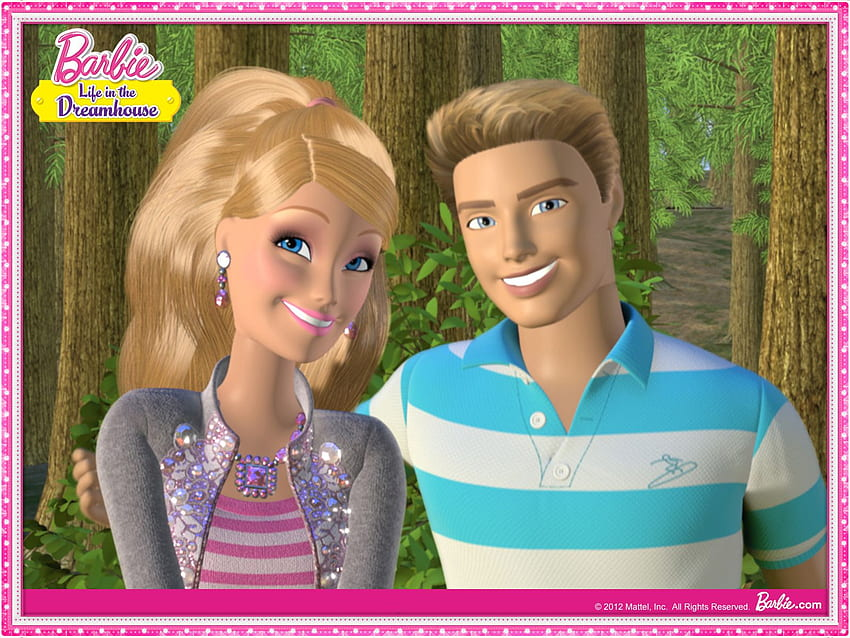
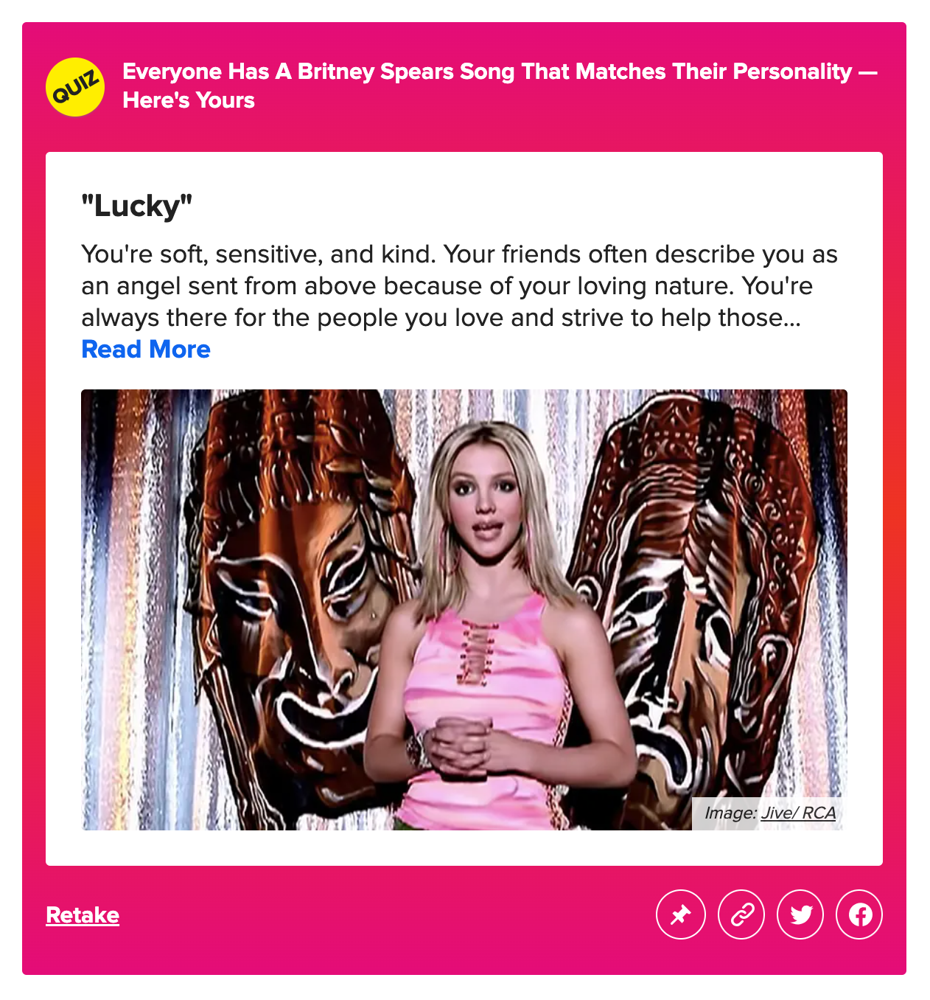
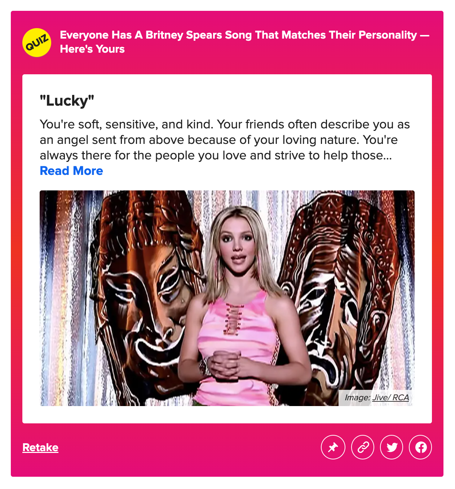
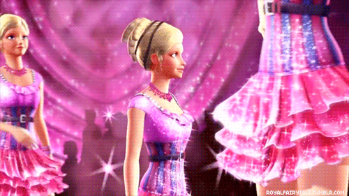
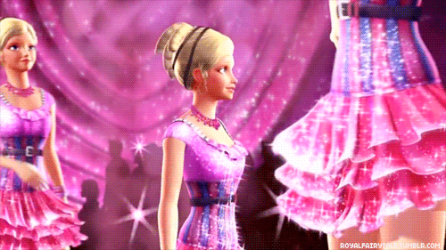

 





Vanilla Ice is selling Kraft macaroni and cheese now. The dudes of Full House are selling Greek yogurt. Boyz II Men recently made a cameo on How I Met Your Mother. This year's Super Bowl featured, of all people, Flea. We are having a moment of '90s nostalgia, occasioned in part by millennials (or The Youths or Those Kids or whatever you want to call them) who are aging into adulthood and therefore eager to relive their childhoods.
Which leads to, among other things, Ice coming back—yet again—with a brand new invention. And he's in good company, too. The boxed dinner the returned rapper would like you to buy? It features noodles that are shaped like the Teenage Mutant Ninja Turtles.

Nostalgia, the copious literature on it suggests, comes in two basic forms. One is organic, the kind that washes over you when you see an old picture of yourself and your cousins, aged 7 and 9 and 10, giggling maniacally while innertubing on Lake Michigan. The kind that emergences unexpectedly, as a kind of pleasant pang—the stuff of sudden songs and serendipitous scents and sour-sweet Madeleines.
The other form—the form that may well feel most familiar to us at this point—is a media product. It's the re-introduction of Uncle Joey and/or Dawson’s Creek's Joey and/or Blossom's Joey, appropriated to arouse a vague sense that we have lost something as we’ve moved, inexorably, into our future. This form of nostalgia is usually invoked, in one way or another, to sell us stuff. You could, because of that, dismiss its validity (fauxstalgia?). But it will live on, inevitably, because media producers know exactly what advertisers have long understood: that nostalgia, like sex, sells.
The products of that basic insight, whether they're movies or TV shows or weird appearances on terrible CBS sitcoms, tend to permeate the culture miasmically, their shiftings shaped by Hollywood and Wieden + Kennedy and the producers of Super Bowl Halftime Shows. And they can be good. They can be, sometimes, great! Take The Lego Movie (pardon me, The LEGO® Movie). And also: Mad Men and Boardwalk Empire and Masters of Sex and any theater that has ever offered a midnight showing of The Big Lebowski.


As market goods, however, these products can also be recursive: Mad Men begat not only Banana Republic’s ’60s-inspired clothing line, but also books like Mad Women: The Other Side of Life on Madison Avenue in the '60s and Beyond. Baz Luhrmann’s remake of The Great Gatsby wasn’t merely a movie; it was also an album (a Target exclusive of which features three bonus tracks!) and a line of Brooks Brothers clothing and a collection of Tiffany jewelry.
While, sure, commercial culture is commercial, it’s also notable how ambient nostalgia has become. The memorial-industrial complex ensures that our past—our collective past—permeates our present. That complex markets directly to memories that are shared, across generations and across demographics and across the culture.
And the complex is extending, now, to the Internet.
Donovan Sung manages discovery and recommendations at Spotify, the streaming music service that, as of the end of last year, claims 24 million active users and 4.5 billion hours’ worth of song streams. Sung spends a lot of his time thinking about how to engage users and encourage their loyalty through the particular medium of music—about how to make those billions of hours, essentially, time that users will consider well spent. One of those ways is through what Spotify calls “stories”: little advertisements that live within the app and surface song recommendations to users.
The stories vary in their messaging. Some are about making lateral connections between different songs and artists (“You listened to Otis Redding this week. Want to try James Brown?”). Some are about connecting users to their geographic settings (“This album by Foster the People is trending near you”). Some are about connecting users to songs whose rhythm or moods they might find appealing (“You listened to Neutral Milk Hotel this week. Want to try Sea Wolf?”).
But some of Spotify’s most effective stories, Sung told me, take a slightly different tack: They present songs based not on your activity within Spotify, but on your activity outside of it. Activity that occurred long before Spotify was a gleam in Daniel Ek's eye.


 

So some of the stories you’ll see on Spotify look like this:


These recommendations vary according to a user’s birth date, which is one of the pieces of information Spotify gathers from its new members when they first sign up for the service. (Gender is another one.) Spotify uses those data points, in part, to read users’ pasts back to them, offering up a fairly faithful (re-)rendition of the popular musical landscape as it existed when they were younger.
In all this, to be clear, Spotify isn’t necessarily surfacing the songs you were listening to when you were in high school. (Its data-tracking notwithstanding, how could it possibly know about the Fiona Apple phase you went through sophomore year?) What it’s doing, instead, is surfacing the songs that were popular across the culture when you were in junior or high school. The service is making the fair assumption that there will indeed be some overlap between your own musical past and the collective. And that, whether or not you care to admit it today, hearing “Hit Me, Baby, One More Time” again will take you right back to a particular moment in your life—that time you danced to it. That time you heard it on the radio as you were driving back from soccer practice. That time you tried, and totally failed, to unhear it.
The point of all this past-leveraging, from Spotify’s perspective, is to realize the vague-but-also-urgent goal shared by many social networks and services: user engagement. "For almost everyone,” Sung says, a nostalgia-focused Spotify story “usually triggers some sort of strong emotion. Sometimes it's, 'Wow, I totally forgot that song. Thanks so much for reminding me of it.' Other times, it's more like, 'Yeah, I remember music was pretty bad when I was young.’” (Case in point? "One of the stories I got was 'Britney Spears was big when you were young,’” Sung says. “And I was like, 'Yeah, I totally remember that, and I don't need to remember it again.’”)
It’s a targeted ad, essentially—and the thing being advertised is a person’s own past.
Spotify isn’t alone in its use of nostalgia as a marketing tool. Social networks in general, you could argue, are implicitly—preemptively—nostalgic, combining our pasts and our presences into a unified experience.
Networks, however, are also experimenting with more explicit forms of nostalgia-baiting. Earlier this month, Facebook rolled out “Look Back” compilations that collect users’ most-liked photos, statuses, and life events into an easily viewable video. (These collections come in addition to the old standby, the network’s “Year in Review” feature.) Instagram, of course, lets you present your self-shot digital images through the filters of analog cameras—a feature that users sometimes employ to participate in "throwback Thursday."
And also! An app called Timehop promises to show you “photos and updates from this exact day in history.” Google Plus, as a default feature of its profile page, creates a personalized map highlighting the geographical locations a user has called home—an individualized bildungsroman, as told through markers. Google itself allows users to export their web histories—which double as page-by-page retrackings, essentially, of lives as lived on the Internet—for both archiving and analysis. Twitter, similarly, lets you download a complete archive of your tweet history—under the logic that, as Twitter engineer Mollie Vandor explained, “We know lots of you would like to explore your Twitter past.”
Even Pinterest, which is most commonly associated with future-oriented and aspirational image-collecting, makes use of customized nostalgia. Gabriel Trionfi, Pinterest's user experience researcher, is a psychologist by training, and he points out that the flip side of anticipation—one of the emotions Pinterest uses to generation its own version of user engagement—is, yep, nostalgia.
“Nostalgia is a known way to boost people's mood,” Trionfi told me. It allows people to live (and re-live) “something familiar, something they remember, a positive emotional experience.” On Pinterest, he points out, if you do a search for something like "80s kid" or "90s toys" or "80s cartoon," you'll be greeted with a wide of assortment of boards that celebrate users' youths. So people are using Pinterest’s future-oriented platform, Trionfi says, to re-collect images from their past.
Nostalgia, at its most basic level, requires access to memories—and there is, of course, no better archive than the Internet. The social networks that are becoming increasingly synonymous with our experience of that Internet are attempting to use that fact for their own gain. “I think you see people seeking out and collecting these things,” Trionfi notes, for one simple reason: “Because it makes them feel good."
The good feeling is growing. Many media outlets ("content producers," you could call them) are selling nostalgia in one form or another: There’s Retronaut and @historyinpix and the many similar—and controversial—features dedicated to the resurfacing of the past. There’s New York magazine’s late, great “Nostalgia Face-Check” series. Yesterday, Wired—known mostly for its reporting on the future—published a list, curated by Questlove, of the top hip-hop tracks of the ’90s. (Questlove's collection includes something from Tony! Toni! Toné!, and is therefore awesome.)
This is all fairly unremarkable; journalists have long recognized the same thing advertisers have, which is that nostalgia is an extremely efficient tool for selling stuff. But media outlets—especially the ones that are merging technological prowess with journalistic—aren’t just leveraging our soft enthusiasms for the past; they’re also taking a platform-focused approach to that work. They, like the social networks, are trafficking in targeted nostalgia.
Take Buzzfeed’s ever-more-ubiquitous quizzes. “Which ‘90s Movie Soundtrack Are You?” asks one. “Which Grease Pink Lady Are You?” asks another. “Which Al Roker Are You?” asks yet another. (I am, apparently, “Al Roker Lifted by Ryan Gosling.” So.)
“The quiz is kind of like the broken-down-to-its-core of what BuzzFeed is,” Summer Anne Burton, Buzzfeed’s managing editorial director and the head of its quiz initiative, told Nieman Lab. “It gives someone something that they can relate to well enough that they can share it with others.” Buzzfeed built a custom template so that its staffers and its community contributors can easily create these identity-focused questionnaires.
Its quizzes are, at this point, the heirs of Buzzfeed’s lists, which are most commonly associated with generational demographics. (“25 Ways to Tell You’re a Kid of the ‘90s,” went one of those. And: “50 Things Only 80s Kids Can Understand.” And also: “53 Things Only ’80s Girls Can Understand.”) The sharetastic questionnaires allow users to identify with each other by means of their pasts. They do what journalists have long tried to do—identify microgenerations—by talking directly to the people who fit those demographics.
The upshot of all this? Nostalgia no longer comes in one-size-fits-all, and that size is no longer “large.” Nostalgia, under the stewardship of the Internet, has been made nimble. Our tenuous relationship with the past can now be customized and made relevant, in the manner of a marketing message. We, like Proust, search for lost time. It's just that our seeking stretches beyond our own meager memories. And it may involve, for better or for worse, Britney Spears.
 



x
x
x
x
x